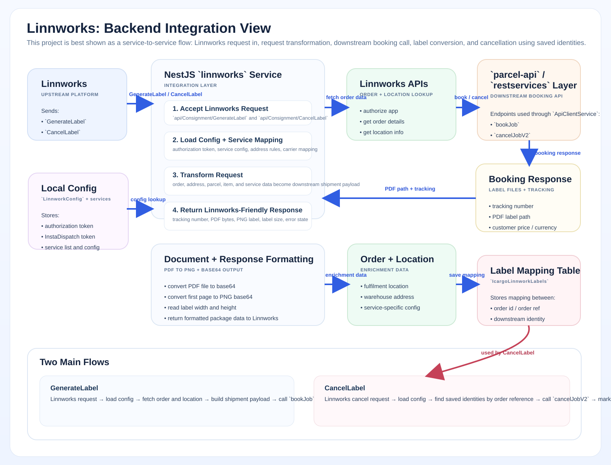

Visual Overview

Reference visual showing the Linnworks integration flow and downstream service boundaries.
Independent Project
Linnworks was an independently deployed integration microservice that handled Linnworks-specific config, request transformation, label-generation flow, and cancellation mapping.

Reference visual showing the Linnworks integration flow and downstream service boundaries.
This is a strong backend integration story: external API orchestration, mapping between system contracts, and independent service ownership.
The runtime picture is Linnworks UI on one side and our NestJS service plus shared backend on the other.